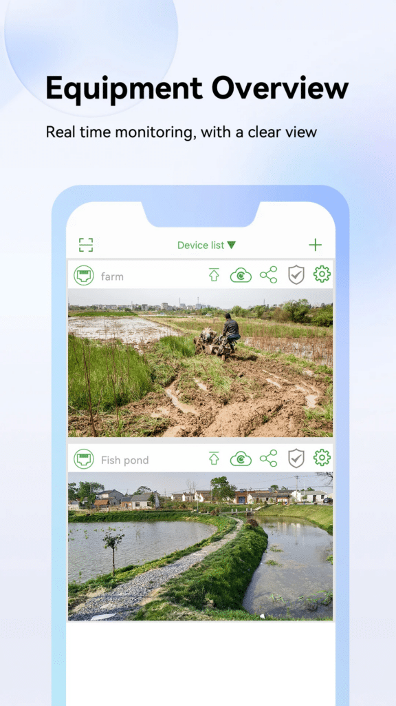
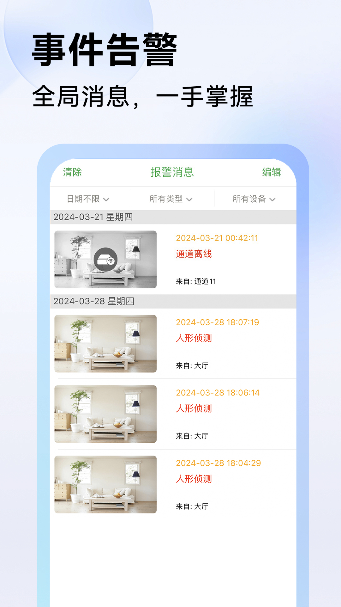

我用 Seetong 盯了三天店，说点真实感受
小老板一枚，手机里装过不下五种监控 App，Seetong 是目前留下来没删的那个。这篇讲上手三天的第一手体验，从安装到误报调优到云存决策，干货都在细节里。
说实话之前我对监控 App 没什么好感。店里装了摄像头，厂家给的那套 App 卡得像 2015 年的微信，推送延迟五分钟是家常便饭，人形侦测基本等于没开——猫走过也报警。所以当同行推荐 Seetong官网 的时候，我抱着"再试一次"的心态装了，没想到三天下来体验差距真的大。
第一眼：界面干净得不像监控 App
安装过程没什么好说的，官方下载或者应用商店搜就能装，注册绑定设备走完向导五分钟搞定。真正让我注意的是打开之后的界面——底部三个标签：首页、预览、报警、我的（哦四个），每个标签的功能分区很清楚，没有那种让你"等等这是什么"的按钮堆叠。
首页顶部是摄像头缩略图网格，点一下直接进入实时预览，滑动切换也顺。说实话我见过太多监控 App 把首页做成"服务商城入口大全"——一打开就是云存促销、AI 服务广告、积分抽奖，真正的画面预览被挤在角落里像个配角。Seetong 反过来了：画面是主角，增值服务收在「我的」页上半屏的一排小图标里，不挡事。

人形侦测：终于不是猫走过也报警了
这是我最想聊的功能。之前用的那几款 App，移动侦测一开就是灾难——树叶晃、反光闪、甚至一只鸽子落在镜头前都能给我推一条报警，一天能收三十多条，到后来直接把推送关了，等于白装。
Seetong 的人形侦测是真的在"认人"，不是只看画面里有没有东西动。我专门在门口那台摄像头上观察了两天：上午马路上行人来来往往，二十多条推送里只有三次是真的有人走到了店门口的侦测区域，其余全被过滤掉了。猫路过、自行车经过、甚至店门口的招牌被风吹得晃，一条都没推。
当然也不是万能的。夜里光线差的时候，侦测精度会降一点——有次凌晨两点一只流浪狗蹲在店门口吃垃圾桶里的东西，被识别成了人。但这种情况一天最多一两次，和之前的"猫也报警"不是一个量级。
调优的关键是把侦测区域画精细，不要偷懒画满整个画面。我把门口那台的侦测框只框了店门台阶那一小块，马路和人行道全排除了，误报直接少了八成。有个小技巧：如果发现推送还是有点多，可以在设备设置里把移动侦测关掉，只留人形——这是 Seetong 社区里老用户公认的"傻瓜式调优方案"。
报警消息中心：终于能翻旧账了
之前用的 App 报警消息最多保留七天，而且没有筛选——你想找"昨天下午三点是谁在店门口"，只能一条条翻。Seetong 的报警中心是真的能当"监控日志"用：按日期倒序分组，每条带精确到秒的时间戳、报警类型、来源设备，还有一张缩略图。顶部三个筛选下拉：日期、类型、设备，想怎么筛怎么筛。

我上周有个快递丢了，调报警记录的时候直接选"上周二 + 大门口设备 + 人形侦测"，三秒钟就定位到快递员送件的时间段，点进去还能跳转录像回放——从报警缩略图直接跳到那段视频，不用自己去录像里拖进度条找，这个细节真的省了不少时间。
有个实用提醒：报警消息本身不等于录像。Seetong 的报警记录是独立存储的，哪怕你清掉消息列表，录像本体还在内存卡或云存里；反过来如果云存到期没续费，消息还在但点进去可能没有视频片段了——后来去 Seetong文档 翻了一下才确认这是设计行为不是 bug。所以重要的事件，最好先抓拍保存再清理列表。
驱赶功能：把监控从"事后取证"变成"当场制止"
这个功能我之前完全没概念。Seetong 的设备设置里有个「驱赶设置」，可以配合人形侦测联动——检测到人形目标进入侦测区域，摄像头喇叭自动播放警示音。我门口那台摄像头刚好带喇叭，试了一下：设置了"人形侦测触发 + 驱赶音自动播放"之后，有天晚上一个人在店门口晃悠，喇叭直接响了，那人抬头看了一眼摄像头就走了，前后不到十秒。
当然也有坑。第一次画侦测区域的时候我偷懒框了半个店门口，结果风一吹树枝晃，喇叭也响了——邻居以为我家遭贼了。后来把侦测框缩小到只框店门那一小块，联动就精准了。还有晚上高音量喇叭可能扰邻，如果摄像头在居民区附近，建议把驱赶音的触发时段设成白天或者调低音量。
云存到底值不值得买
Seetong 的「我的」页上半屏有一排增值服务图标：云存储、AI 服务、4G 流量、保险服务、优惠券。云存是核心付费项，也是我纠结了好久的地方。
我的建议分三步：先装卡、再观察、最后按需上云。Seetong 的大多数摄像头都支持内存卡本地录像，先插一张 64G 的卡用着，观察个一两周——看报警触发频率高不高、有没有"需要云端备份"的场景（比如贵重物品区、经常有可疑人员的门口）。确认需要了再订阅云存，而且建议只给高风险点位上云，室内用卡就够。
还有个容易忽略的点：Seetong 的动态云存只上传触发报警的录像片段，不是全时录制。如果只开人形侦测，云上就只有人形事件的片段——这意味着云存套餐的空间利用率其实挺高的，不像有些厂商的全时云存，24 小时录下来几天就满了。
适合谁
- 小店老板、家庭用户：设备数量不多（一台到三五台），核心需求是"有人进我家/店门口能及时收到通知"，人形侦测 + 报警推送 + 云存（可选）这套组合基本够用。
- 对误报忍无可忍的人：之前用过其他监控 App 被误报烦到关推送的，换 Seetong 大概率会觉得清净不少。
- 需要"主动防御"的场景：门口摄像头配驱赶功能，比单纯录像有用。
不适合谁
- 设备数量特别多的工程商：Seetong 虽然有多设备管理，但毕竟是面向消费级的产品，几十台摄像头集中管理的场景还是得用专业 NVR 系统。
- 只看实时画面不需要报警的人：那用任何监控 App 都行，Seetong 的优势在侦测和告警链路上。
最后
三天用下来，Seetong 最大的优点不是某个单一功能，而是整套体验的"顺"——从人形侦测的精度，到报警消息的筛选，到驱赶功能的联动，每个环节都没有那种"这设计是反人类吧"的时刻。它不是完美的，云存的价格不算便宜，夜里的侦测精度也会降，但对于我这种只想"安安心心看个店"的小老板来说，够用而且省心。
如果你的摄像头是 Seetong 兼容的设备，装一个试试人形侦测，对比一下之前用的 App，差距会很明显。